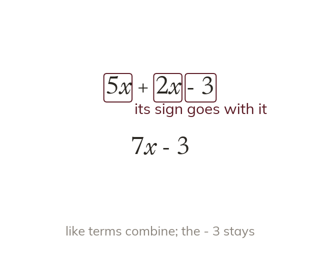

Like terms and combining them
Like terms have the same letters at the same powers. Combine them by adding or subtracting the coefficients. Unlike terms, such as 3x and 3y, cannot combine.
Like terms have exactly the same letters raised to exactly the same powers; only the coefficients differ. Like terms are combined by adding or subtracting the coefficients, leaving the letter part unchanged: 5x + 2x = 7x. Unlike terms (3x and 3y, or x and x²) cannot be combined into one term. The sign in front of a term belongs to it and travels with it.